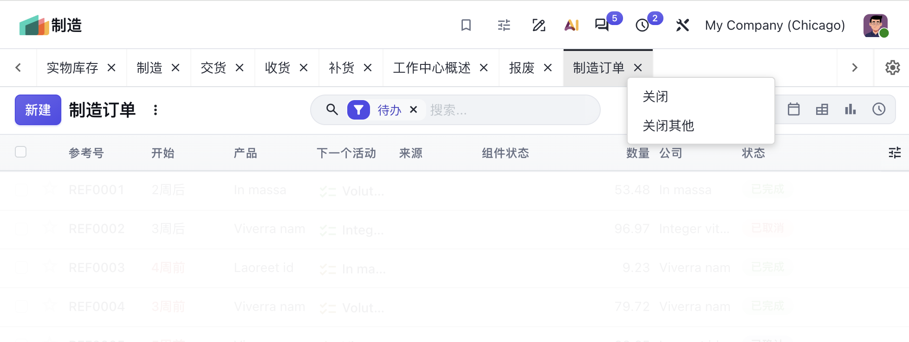
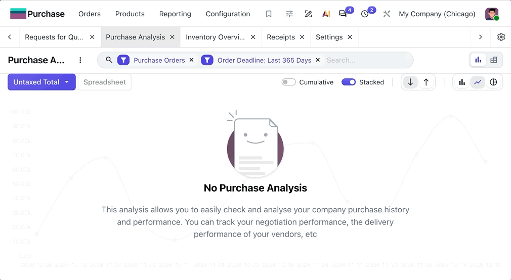

Multi Tabs
for Odoo 20
Community & Enterprise
✓ On-premise
✓ Odoo.sh
✗ Odoo Online
Browser-like tabs · Nothing reloads · Fullscreen aware · 简体中文
Keep several Odoo screens open in separate tabs
Open a menu and it lands in its own tab; open another one and the first stays exactly where it was.
Go back and everything is still there: the view, the filters, the form you had not saved yet.
No configuration, no new habits to learn.

A tab per screen
Every menu and action opens its own tab instead of replacing the one you were on.
Nothing gets lost
Tabs stay mounted: coming back restores the view, the filters and the unsaved form.
Full control
Close one tab or all the others, step through them with the arrows, or pick one in the list.
Fullscreen stays fullscreen
Barcode, Shop Floor and stock counts still take the whole window, without a tab bar.
How it works
From a single tab to a full workspace, in four gestures.
1
Open an appPick a menu: it opens in a new tab, the previous one stays where it was.2
Open another oneAnother app, another menu, a record: a new tab appears next to the first.3
Jump between themClick a tab, or use ‹ ›: the app menu, the sidebar highlight and the URL follow.4
Close what you no longer needThe × closes one tab; right-click closes that tab or all the others.

The bar in action: each menu keeps its tab, and the app menu, the sidebar and the URL always match the active one.
The tab bar
A single strip above the control panel, with the look and spacing of the rest of the backend.
One tab per action
Each root action gets its own tab. Opening the same one again reuses its tab instead of piling up duplicates, so the bar stays readable all day long.
Switch without reloading
Controllers stay mounted in the background: a tab switch is instant, keeps the scroll position, the filters and whatever was typed but not saved.
Close one or all the others
The × and the gear menu offer Close Tab and Close Other Tabs; the same two entries are on the right-click menu of a tab.
In sync with the app menu
Activating a tab of another app switches the application menu, the sidebar highlight and the browser URL, exactly as if you had clicked the menu.
Everything the bar does
Small behaviours that make the difference once you work with ten screens open.
Navigation
Click a tab
Activates it and restores its view, its filters and its position in the app.
Previous / next
The ‹ and › buttons walk through the tabs in order, one click each.
Right-click menu
Close the tab under the pointer, or every tab but that one.
Gear menu
The same two actions, always visible in the right corner of the bar.
State & history
Tabs stay alive
Leaving a tab does not destroy it: no reload, no lost edit, no lost search.
Bookmarkable
The URL follows the active tab, so a page can be refreshed or shared as usual.
Back where you started
Leaving a fullscreen app returns to the tab you came from, as it was.
Home Menu left alone
The Home Menu hides the bar and never takes over an app tab.
Compatibility
Odoo 20
Built on the Odoo 20 action manager: Community and Enterprise, no dependency on a specific theme.
Fullscreen apps
Actions opened with target = fullscreen hide the bar instead of adding a tab.
Sidebar themes
The sidebar highlight is updated on every tab switch, custom navigation themes included.
Light footprint
Depends only on base and web: nothing else to install or configure.
Fullscreen apps stay fullscreen
Barcode, Shop Floor, stock counts and any action declared fullscreen keep the whole window:
the tab bar steps aside instead of squeezing them, and it comes back by itself when you leave.
A fullscreen app never occupies a tab.
No bar, no leftover
- the bar is hidden as soon as the fullscreen action takes over
- it disappears with the transport buttons and the breadcrumbs
- it is back, intact, when you close the fullscreen screen
Tested on
- Barcode, and the Operations page behind it
- Shop Floor (Manufacturing)
- Inventory counts
- any client action or window action with target = fullscreen
Multi-language
The interface strings are translatable, and Simplified Chinese ships with the module.
The two entries of the gear menu and the right-click menu follow the language of the user, like the rest of
the backend.
Where it runs
A pure web module: one line in the assets of the backend, nothing on the server side.
| Edition | Tab bar | Fullscreen apps | Notes |
| Community |
✓ |
✓ |
Only depends on base and web |
| Enterprise |
✓ |
✓ |
Home Menu detected and left untouched |
| Odoo Online |
✗ |
– |
Custom modules cannot be installed |
Getting started
Install
- Copy the module to your addons path.
- Update the apps list and install Multi Tabs.
- Reload the browser page.
- Open two menus: the bar is there, nothing else to set up.
Good to know
- No configuration: the bar appears as soon as the module is installed.
- After a change to the styles, restart the server or upgrade the module: asset bundles are cached.
- Tabs keep their controller in memory, so the more tabs, the higher the cost.
- Uninstalling restores the standard single-page navigation.
Multi Tabs — browser-like navigation for Odoo 20
Hubin · LGPL-3